One of the purposes of polarization ray tracing is determination of the diattenuation and retardance associated with ray paths through an optical system. It can also be used to compute the polarization aberration function of an optical system. In this section those polarization properties will be defined and algorithms for their computation using the three dimensional polarization ray tracing calculus will be presented.
Diattenuation: is measure of polarization dependent transmittance of a given optical element. Literally diattenuation means "two attenuations", and is used to compare the loss of intensity of the s polarized light compared to the p polarized light. It depends on the maximum and minimum intensity transmittances considered over all incident polarization states as:
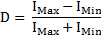
In Jones calculus the eigenvectors of Jones matrix represent the two polarization states for maximum and minimum transmittance and thus the diattenuation can be computed from the corresponding eigenvalues. But for three dimensional polarization ray tracing calculus, eigenvectors of the P matrix do not generally represent polarization states because in general light rays enter and exit in different directions. The diattenuation of the P matrix can be calculated by using the singular value decomposition (SVD) .
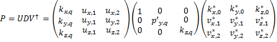
By definition the diagonal elements of D matrix are the singular values of P. The first column of V is incident wave vector K0. The other two columns of V, v1 and v2, are two special polarization vectors in the incident transverse plane that generate the maximum and minimum transmitted flux. Similarly, the columns of U are the exiting propagation vector KQ and two orthogonal polarization vectors u1 and u2 in the exiting transverse plane. Expressing an arbitrary incident polarization as linear combination of these orthogonal polarization states v1 and v2 , the following relation can be derived for diattenuation .
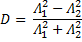
Retardance is defined as polarization dependent phase change or optical path difference associated with a ray path through an optical system. In Jones calculus the proper retardance is defined as the actual accumulation of polarization dependent optical path difference due to the optical elements. In addition to that a polarization state analyzer reads additional retardance if the exiting local coordinates are not parallel to the local incident coordinates. This is the retardance due to local coordinate transformation. The following figure illustrates this,
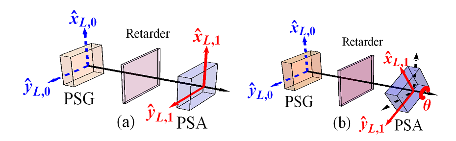
If the retarder is just an empty compartment and has identity jones matrix, the polarization state analyzer in (a) measures the unity matrix (zero retardance). But if the analyzer is roated by some angle, the incident and exiting local coordinates are no longer parallel and so the analyzer will measure the rotation matrix instead of identity matrix.
Therefore, while computing retardance it is necessary to separate the proper retardance from the one which is caused by coordinate transformation. The concept of parallel transport ray tracing matrix Q was introduced to perform such separation in three dimensional calculus.
A parallel transport ray tracing matrix Qq for qth surface (polarizing element) is defined as a 3X3 ray tracing matrix calculated by assuming that the surface/element is non-polarizing. That is, Qq provides well defined relation between local coordinate before and after the surface/element. Just as for the P matrix, the cumulative parallel ray transport matrix can be defined as the product of all consecutive Q’s.
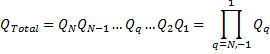
Therefore, Q-1Total can reverse all the geometric transformation. And the operation
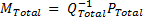
gives a polarization ray tracing matrix MTotal with all the effects of coordinate transformation removed (i.e. with the exiting local coordinate made parallel to the incident ray local coordinate). Now the retardance computed from the M matrix will be the proper retardance of the system.
Any element (corresponding M matrix) can be expressed as a product of a pure retarder with a pure diattenuator, and the retardance is well-defined to be that of the pure retarder. This can be achieved by polar decomposition of M matrix.
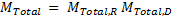
Then proper retardance can be calculated as the phase difference of non-unity eigenvalues of MToatl,R.
Polarization aberration P(h,r,λ) of an optical system is variation of polarization properties of an optical system with object coordinates , pupil coordinates and wavelength. It can be determined by performing polarization ray tracing of a ray bundle through an optical system. As ray tracing program can only trace a limited number of rays, the polarization aberration function P(h,r,λ) determined will be a matrix of sampled values at different locations in the exit pupil, indicated by r. Each element of the matrix indicates the total polarization ray tracing matrices for entire path of the ray passing through that specific location.
Tracing an L X M grid of rays through an optical system results in L X M grid of propagation vectors, L X M grid of positions and L X M grid of optical path lengths.
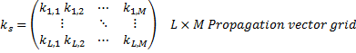
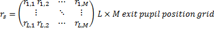
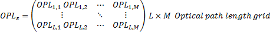
And the sampled polarization aberration function will be L X M grid of the polarization tracing matrices at each location. If the exit pupil is not rectangular, the entries corresponding to locations outside the pupil will be filled with zeros.
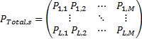
As arguments of the complex matrices of the polarization aberration function are always less than 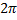, optical path lengths are calculated separately.
Created with the Personal Edition of HelpNDoc: Free EBook and documentation generator